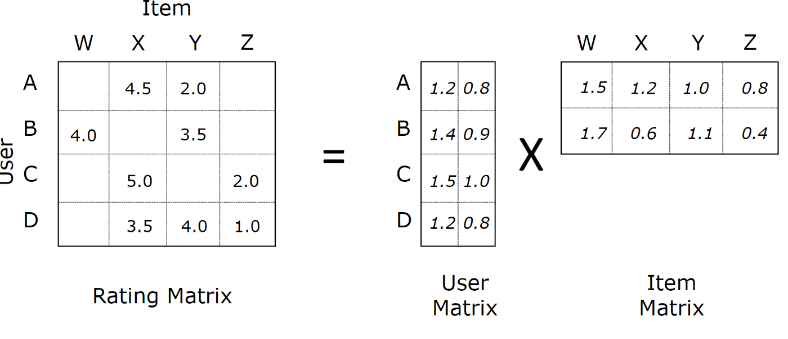

Comparing Collaborative Filtering Methods
As part of a project sponsored by the data science team at Air Liquide here in Philadelphia, I’m diving deep into collaborative filtering algorithms. There are 2 main goals of this project:
- Gain understanding of a variety of collaborative filtering algorithms by implementing them myself
- Compare quality and speed of a variety of algorithms as a function of dataset size
The data I’m using comes from the GroupLens research group, which has been collecting movie ratings from volunteers since 1995 and has curated datasets of a variety of sizes. For simplicity, I’ll focus on the 100K dataset, the smallest one, to enable faster iteration.
I split this project into several parts. Here’s a table of contents for you:
- Exploratory Data Analysis
- Baseline Algorithms
- Similarity-Based Algorithms
- Alternating Least Squares
- Stochastic Gradient Descent
- Algorithm Comparisons
- Recommender System Prototype
Exploratory Data Analysis
Check out the full notebook for this section here.
Before getting into any algorithm development, I wanted to get a picture of the data I was working with, so I asked the questions on my mind and tried to answer them with the data.
What does the ratings distribution look like?

It’s a little skewed to the positive side, with 4 being the most common rating. I guess that skew makes sense because people are more likely to watch stuff they would like than stuff they would hate.
Next: how consistent are the ratings over time? If people as a whole get more positive or negative over time, that could complicate things. If their behavior doesn’t seem to change too much, we can make a simplifying assumption that time doesn’t matter and ignore time dependence.
Looks pretty consistent, so we’re going to make that simplifying assumption. Purely out of curiosity, how much do the number of users and movies change over time?
The amount of growth in the short timespan of this dataset, particularly in the number of users, does make me think a more complicated approach could be warranted. Buuuuuut I don’t want to do that right now. We’ll stick with assuming we’re working with an IID dataset for the purposes of this project.
A very crucial aspect to understand about typical recommendation situations is the sparsity of your dataset. You want to predict how much every user likes every movie, but we have data about very few user-movie combinations. We’ll explore this in two ways.
First we’ll visualize the sparsity pattern of the user-movie matrix. This could be done with Matplotlib’s spy function, but I didn’t know about it at the time I did this analysis, so I did this manually. The plot below shows a single, tiny black square for every user/movie combination we have. If everyone rated every movie, you’d see a solid black rectangle. Instead what we see is a lot of white–lots of user/movie combinations for which we don’t have a rating (yet). You especially see a lot of white in the top right corner. This is probably because early raters had access to fewer movies to rate, and new users progressively had more movies to rate as they were added to the system.
The matrix density is \(n_{ratings}/(n_{users}×n_{movies})=0.063\), meaning that about 94% of the data we would like to know is missing.
In the plot above you also notice that there are a few darker rows and columns, but most rows and columns are pretty bare. Let’s visualize the distributions of number of ratings by user and by movie. The way I chose to visualize this is with an Empirical Cumulative Distribution Function (ECDF) plot. An ECDF plot has an advantage compared to a histogram that all data points can be plotted in a meaningful way, and no bin size has to be chosen to average arbitrary chunks of it. This is especially helpful with the long-tailed distributions here.
In the plot above, you can learn, for example, that 40% of all users rated 50 or less movies, and 90% of movies have 169 or less ratings. In general, we seen that a large fraction of movies and users have few ratings associated with them, but a few movies and users have many more ratings.
The main thing to take from this though is that the matrix of possible ratings is quite sparse, and that we need to use models that deal with this lack of data.
Baseline Algorithms
Check out the full notebook for this section here.
Baseline models are important for 2 key reaons:
- Baseline models give us a starting point to which to compare all future models, and
- Smart baselines/averages may be needed to fill in missing data for more complicated models
In this section, we’ll explore a few typical baseline models for recommender systems and see which ones do the best for our dataset. For all of these baseline models, and for that matter all the “real” models in the following sections, I coded them with the following structure, roughly similar to Scikit-learn’s API:
class SomeBaselineModel():
def __init__(self):
# Run initialization steps
def fit(self, X):
# Compute model parameters from ratings dataframe X with user, movie,
# and rating columns
...
return self
def predict(self, X):
# Predict ratings for dataframe X with user and movie columns
...
return predictionsI won’t actually put the code for all the models in here, but it’s all there in the Jupyter notebook.
Simple Average Model
The first model I implemented is about the simplest one possible, which I called SimpleAverageModel. We’ll average all the training set ratings and use that average for the prediction for all test set examples. It probably won’t do very well, but hey, it’s a baseline!
Average By ID Model
We can probably do a little better by using the user or item (movie) average. To do this, I set up a baseline model class, which I called AverageByIdModel, that allows you to pass either a list of userIds or movieIds as X. The prediction for a given ID will be the average of ratings from that ID, or the overall average if that ID wasn’t seen in the training set. This will probably get us a little farther than SimpleAverageModel but it still won’t win any million-dollar prizes.
Damped User + Movie Baseline
Lastly, we can likely do even better by taking into account average user and movie data for a given user-movie combo. It has an additional feature of a damping factor that can regularize the baseline prediction to prevent us from straying too far from that average of 4. The damping factor has been shown empirically to improve the baseline’s perfomance. I called my implementation DampedUserMovieBaselineModel.
This model follows equation 2.1 from a collaborative filtering paper from GroupLens, the same group that published the MovieLens data. This equation defines rhe baseline rating for user \(u\) and item \(i\) as
\[b_{u,i} = \mu + b_u + b_i\]
where
\[b_u = \frac{1}{|I_u| + \beta_u}\sum_{i \in I_u} (r_{u,i} - \mu)\]
and
\[b_i = \frac{1}{|U_i| + \beta_i}\sum_{u \in U_i} (r_{u,i} - b_u - \mu).\]
(See equations 2.4 and 2.5). Here, \(\beta_u\) and \(\beta_i\) are damping factors, for which the paper reported 25 is a good number for this dataset. For now we’ll just leave these values equal (\(\beta=\beta_u=\beta_i\)). Here’s a summary of the meanings of all the variables here:
| Term | Meaning |
|---|---|
| \(b_{u,i}\) | Baseline rating for user \(u\) on item (movie) \(i\) |
| \(\mu\) | The mean of all ratings |
| \(b_u\) | The deviation from \(\mu\) associated with user \(u\) |
| \(b_i\) | The deviation from \(\mu+b_u\) associated with user \(i\) |
| \(I_u\) | The set of all items rated by user \(u\) |
| \(\mid I_u \mid\) | The number of items rated by user \(u\) |
| \(\beta_u\) | Damping factor for the users (\(=\beta\)) |
| \(r_{u,i}\) | Observed rating for user \(u\) on item \(i\) |
| \(U_i\) | The set of all users who rated item \(i\) |
| \(\mid U_i \mid\) | The number of users who rated item \(i\) |
| \(\beta_i\) | Damping factor for the items (\(=\beta\)) |
Baseline Comparison
With those baseline models defined, let’s compare them. In the plot below, I test 7 baseline models. The first is the SimpleAverageModel. The next two use the AverageByIdModel looking at averages by Item ID and User ID, respectively. The last 4 use the DampedUserMovieBaseline with different damping factors (\(\beta\)). The top plot shows the Mean Absolute Error (MAE) of each fold after using 5-fold cross-validation. I chose MAE so as not to overly penalize more extreme ratings (compared to Mean Squared Error) from people angrily or over-excitedly selecting 1 or 5. The bottom plot shows the distributions of the corresponding residuals, meaning the difference between actual and predicted ratings.
The MAE plots above show that the combined model with a damping factor of 0 or 10 performs the best, followed by the item average, then the user average. It makes sense that taking into account deviations from the mean due to both user and item would perform the best: there are more degrees of freedom (\(n_{users}+n_{movies}\) to be exact) being taken into account for each baseline prediction. The same idea explains why the item average performs better than the user average: there are more items than users in this dataset, so averaging over items gives you \(n_{movies}\) degrees of freedom, which is greater than the \(n_{users}\) degrees of freedom for the user average. The residual plots underneath the MAE plot illustrate that taking into account more data pulls the density of the residuals closer to 0.
Before moving on to collaborative filtering models, we’ll want to choose which model to use as a baseline. Both the Combined 0 and Combined 10 models performed equally well, but we’ll choose the Combined 10 model, because a higher damping factor is effectively stronger regularization, which will prevent overfitting better than a damping factor of 0.
Similarity-Based Algorithms
Check out the full notebook for this section here.
Now that we’ve established some simple baseline models and demonstrated that the Damped User + Movie Baseline model is the best of the few we tested, let’s move on to some actual collaborative filtering models. Here, we’ll explore user-based and item-based collaborative filtering.
 Image by Salem Marafi, found at salemmarafi.com
Image by Salem Marafi, found at salemmarafi.com
{kind=link}
The idea of these methods is to predict unseen ratings by looking at how similar users rated a particular item, or by looking at how similar items were rated by a particular user. Both methods fall under the category of K-Nearest Neighbor (KNN) models, since ratings from the \(k\) most similar users or items are combined for the prediction.
In the notebook linked above, I’ve implemented a class called KNNRecommender that can accept a mode parameter of either 'user' or 'item'. In the plot below, I use 5-fold cross-validation to measure the MAE of user- and item-based models as a function of \(k\). The green band represents the mean \(\pm\) standard deviation of the best baseline method chosen from the previous section.
Here we can see that Item-based collaborative filtering outperforms User-based collaborative filtering for all \(k\). This occurs for the same reason that the Item average baseline performed better than the User average baseline: there are generally more ratings per item than there are ratings per user, since there are more users than movies. (This reverse is true for larger datasets like the MovieLens 20M Dataset where there are more users than movies.)
We also see that the best Item-based CF model occurs around \(k=10\) while the best User-based CF model occurs around \(k=20\). We’ll keep these in mind when comparing models later.
Next, we’ll start looking at matrix factorization methods, beginning with Alternating Least Squares.
Alternating Least Squares
Check out the full notebook for this section here.
Previously, I showed how to use similarity-based approaches that guess unknown user-movie-rating triplets by looking at either movies with a similar rating profile or users with a similar rating profile. These approaches leave a lot of data on the table though. Matrix factorization is a way to both take into account more data and perform some regularizing dimensionality reduction to help deal with the sparsity problem.
The basic idea is to organize the user-movie-rating triplets into a matrix with each row representing a user and each column representing a movie. We want to approximate this large matrix with a matrix multiplication of 2 smaller matrices. In the example below, each row of the “User Matrix” has 2 latent features of that user, and each column of the “Item Matrix” has 2 latent features of that item. The dot product of any user’s latent features and item’s latent features will give an estimate of the rating that user would give that movie.
 Image by Soumya Gosh, found at medium.com
There are many variations on this theme and multiple ways to perform this matrix factorization. The method I demonstrate here is called “Alternating Least Squares” method which was designed for the Netflix Prize and described in this paper. This method works iteratively, with 2 main steps per iteration:
- Assume the User Matrix is fixed and solve for the Item Matrix
- Assume the Item Matrix is fixed and solve for the User Matrix
In the notebook linked above, the full code for the ALSRecommender can be found.
Since this is an iterative method, I first checked the amount of iterations/epochs for an arbitrary number of latent features \(k\) before the error curves start to plateau:
So it looks like 15 or 20 epochs should be enough for Test Error to start plateauing. So now let’s stick with 15 epochs and use cross-validation to select an optimal \(k\):
It looks like we have a Test Error minimum around \(k=5\), so we’ll call that the winner for the ALS category.
Great, so now let’s move on to a different matrix factorization approach: stochastic gradient descent.
Stochastic Gradient Descent
Check out the full notebook for this section here.
Previously, I showed how to do matrix factorization using Alternating Least Squares (ALS). Now we’ll attempt to factorize the matrix into the same mathematical form, but we’ll use a different technique to get there.
Derivation details that give us the update equations we need can be found here. I’ll just give the start and finish here.
We start with a loss function that looks like this:
\[ L = \sum_{u,i}(r_{ui} - \hat{r}_{ui})^2 + \lambda_{b_u} \sum_u \lVert b_u \lVert^2 + \lambda_{b_i} \sum_i \lVert b_i \lVert^2 \\ + \lambda_{x_u} \sum_u \lVert \mathbf{x}_u \lVert^2 + \lambda_{y_i} \sum_i \lVert \mathbf{y}_i \lVert^2 \]
The first term is a sum of squared errors on the predicted rating, while all the other terms are regularizing penalties on too high of values, tunable by the 4 \(\lambda\) parameters. \(\hat{r}_{ui}\), the predicted rating for user \(u\) on item \(i\), is given by
\[ \hat{r}_{ui} = \mu + b_u + b_i + \mathbf{x}_u^\top \cdot \mathbf{y}_i \]
With this setup, we can iterate over ratings, compute the gradient in the loss function for that point with respect to each parameter \(b_u\), \(b_i\), \(\mathbf{x}_u\), and \(\mathbf{y}_i\). As mentioned in the post linked above, the final update equations look like this
\[ %% MathJax doesn't support multiline equations, so I'm using a hack to get them to %% render correctly, pulled from %% https://github.com/mathjax/MathJax/issues/2312#issuecomment-538185951 \displaylines{ b_u^{t+1} = b_u^{t} + \eta (e_{ui} - \lambda_{b_u})b_u \\ b_i^{t+1} = b_i^{t} + \eta (e_{ui} - \lambda_{b_i})b_i \\ \mathbf{x}_u^{t+1} = \mathbf{x}_u^{t} + \eta (e_{ui} \mathbf{y}_i - \lambda_{x_u} \mathbf{x}_u) \\ \mathbf{y}_i^{t+1} = \mathbf{y}_i^{t} + \eta (e_{ui} \mathbf{x}_u - \lambda_{y_i} \mathbf{y}_i) \\ } \]
where \(\eta\) is the learning rate (a parameter that controls the speed of descent down the gradients) and \(e_{ui}\) is the prediction error given by \(\hat{r}_{ui} - r_{ui}\).
The code for the SGDRecommender and the tuning of that model can be found in the notebook linked above.
First, just like we did with ALS, let’s see how the testing error changes as this iterative model progresses:
It looks like around 12 is the optimal number of iterations to run before we start overfitting, so we’ll use that from here on out. Next, just like before, let’s use cross-validation to find the best \(k\):
Honestly, the fact that training error came back up at \(k=50\) probably means I didn’t use the right amount of iterations/epochs, because training error should always go down with increasing model complexity. But my implementation of SGD is pretty slow and painful, and I really don’t want to rerun this. Using Cython or some other method to move the large amount of for looping into the C-layer could significantly reduce this pain, but I’m not getting into that right now.
With that caveat in mind, since \(k=50\) resulted in the lowest test error, we’ll declare that the winner of the SGD variants and move on to comparing all the models.
Algorithm Comparisons
Check out the full notebook for this section here.
Now that I’ve implemented 3 main classes of collaborative filtering methods (similarity-based, alternating least squares (ALS), and stochastic gradient descent (SGD)), it’s time to see how they stack up to each other.
To compare models, I’ll use 2 different metrics: mean absolute error (MAE) and normalized discounted cumulative gain (NDCG). MAE measures about how many stars off all the predictions are on average. This is useful information, but in most recommendation situations, the user will only see a few of the top recommendations given to them. The NDCG score tells us how “good” the top few recommendations are, with decreasing weight given the farther you go down the list.
Usually, NDCG will be reported for a certain number of recommendations. If we just care about the first 3 recommendations, we would compute NDCG@3. If there were no movies that the user would have rated more highly than these 3, then NDCG@3 is 1.0. Lower values mean other movies would have gotten higher ratings.
If you’re interested, the math looks like this:
Given a vector \(\mathbf{r}\) of \(k\) recommendations from most to least recommended, discounted cumulative gain (DCG) is given by:
\[DCG@k = \sum_{i=1}^k \frac{r_i}{\log_2(i+1)}\]
Normalized DCG (NDCG) is DCG divided by the maximum possible DCG:
\[ NDCG@k = \frac{DCG@k}{\max_{\mathbf{r}} DCG@k}\]
First let’s choose the best User-based model:
NDCG@3 peaks at k=50, and MAE is pretty similar between k=20 to 100, so k=50 is the winner. Now let’s do the same thing for an item-based recommender:
Here, \(k=10\) and \(k=20\) have similar MAE and NDCG@3, we’ll favor higher \(k\) in nearest neigbor methods because higher \(k\) is less prone to overfitting. \(k=20\) is the winner of the item-based models.
Now with the iterative ALS and SGD models, we haven’t yet seen how NDCG@3 changes over time, so we need to examine that first before doing tuning the \(k\) parameter.
15 epochs still looks good for ALS, so let’s do our \(k\) tuning, sticking with 15 iterations:
Here, it looks like MAE is pretty flat with respect to the learning rate \(\lambda\), but NDCG@3 shows some interesting variations. The highest NDCG@3 comes from \(\lambda=0.1\) and \(k>=50\). With matrix factorization methods like ALS, we want to favor lower \(k\) for better generalizability, so \(\lambda=0.1\) and \(k=50\) is the winner of the ALS category.
How does NDCG@3 change over time with the SGD model?
Oof, looks like we’re going to need more than 15 epochs to get both the MAE and NDCG@3 to plateau, but I’m not redoing that plot because time is money and my slow implementation of SGD is sure costing a lot of time. I’ll ramp up to 30 iterations for model tuning hope that’s good enough. Now with SGD there are a lot more parameters you could tune. For the sake of time, we’ll stick with \(k=50\) based on the ALS results, and tune the learning rate (\(\eta\)) and regularization parameters (\(\lambda_*\)). We’re going to further simplify things by forcing all the regularization parameters to be equal and call them \(\lambda\), i.e.
\[\lambda_{b_u}=\lambda_{b_i}=\lambda_{x_u}=\lambda_{y_i}=\lambda\]
Here’s are the errors and NDCG@3 as a function of \(\lambda\) and \(\eta\):
\(\lambda=\eta=0.01\) gives the best combination of MAE and NDCG@3, so that combination is the winner for SGD.
There’s a lot of information in the 3 charts above. The charts show 3 different metrics (Mean Absolute Error, Normalized Discounted Cumulative Gain, and time) for the best user-based, item-based, ALS, and SGD models I found. Each metric/model combination has 3 points, representing the values for each of the 3 folds used for cross-validation.
The MAE doesn’t seem to change much across the different models, although the variance seems to be slightly smaller for the matrix factorization methods (ALS and SGD) compared to the nearest neighbors methods (user-based and item-based).
The NDCG@3 does seem to vary across the different models though, with the highest score going to the ALS model. NDCG@3 is arguably the more useful metric for a recommender system, so as long as very high speeds aren’t important, ALS wins here.
If this ALS model is too slow for a particular application, the item-based method would be the next choice. Both user- and item-based recommenders have similarly fast training speeds, with item-based having a slightly higher NDCG@3 score. The slower execution of the ALS and SGD models are likely related to the number of iterations over for loops required in each iteration.
As they are right now, my user- and item-based models don’t need any python for loops during training. ALS has \(n_{users} + n_{movies}\) python for loop iterations per epoch, and SGD has \(n_{ratings}\) iterations per epoch, which is about an order of magnitude higher. I specify “python” for loops, because the vectorized operations used in user-based, item-based, and ALS models have for loops in c which are much faster than those in python. By optimizing code with something like cython or numba, I could certainly drop the training time for ALS and SGD.
Recommender System Prototype
If you want to play with these models interactively, check out my recommender notebook. With this notebook, you could choose whichever user you want, show some of their favorite movies, then display the top recommendations given by any of these 4 models.
Below is a screenshot of what you’ll see if you use this notebook. You input a user id (user 30 in this case), and the notebook displays posters of 5 of that user’s most highly rated movies. You choose a model ('als' in this case–other options are 'user', 'item', or 'sgd'), and the notebook takes a little time to compute, then displays the 3 movies the model most strongly recommends that user should watch. It’s not perfect, and I haven’t really verified that the results make sense, but it does something, so enjoy, and feel free to ask any questions below.